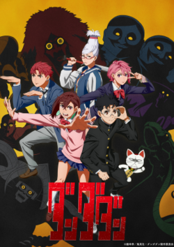
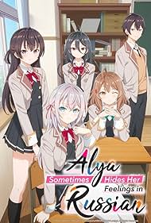

| Welcome To My Virtual Space |
| Homepage |
Profile |
Gallery |
Article |
Guest Book |
Anime
| ◄ Music |
Game ► |
|
Anime adalah jenis animasi dari Jepang yang dikenal dengan ciri visual khas, gaya ekspresif, dan cerita yang beragam, mulai dari drama komedi hingga fiksi ilmiah. Istilah anime merupakan singkatan dari kata "animation" dalam bahasa Inggris, tetapi di Jepang, istilah ini mencakup semua jenis animasi. Namun, di luar Jepang, anime secara spesifik merujuk pada animasi yang berasal dari Jepang atau memiliki gaya khas Jepang. Berikut adalah beberapa anime yang pernah saya tonton :
|
Tensura |
Tsukimichi |
Tate no Yuusha |
 Mushoku Tensei |

Konosuba |

Attack on Titan |

Dandadan |

Roshidere |
| Back to Article |
|
©All Right Reserved - Zenn 2025 ©Created With HTML and a Bit of Patience |